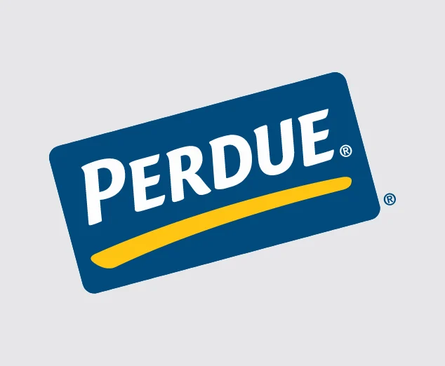

Program Manager — Manufacturing & Continuous Improvement
Perdue Farms
- Developed capital approval packages for an $18M portfolio across two plants through CAPEX business cases, ROI modeling, cost estimates and executive investment reviews.
- Improved on-time project milestones from 85% → 95% via stage-gate governance, Power BI portfolio visibility, risk registers and weekly/biweekly risk-mitigation reviews.
- Governed a $7.2M high-speed equipment installation, delivering $900K in reported annual savings through vendor coordination, budget reviews and commissioning readiness.
- Delivered $10.8M in annualized savings across two plants through cross-functional Lean programs, labor optimization and process improvements.
- Increased PM compliance +16% and reduced emergency interventions −18% via a reliability-improvement roadmap on IBM Maximo data.
- Raised first-pass quality to 98% and cut rework 12% through FMEA, SPC, DMAIC and standardized quality controls.
- Supported TRIR reduction 0.8 → 0.5 by partnering with EHS to deploy forklift proximity detection and revised SOPs.